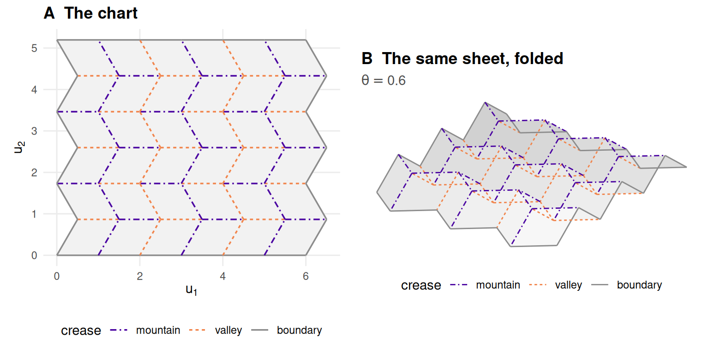
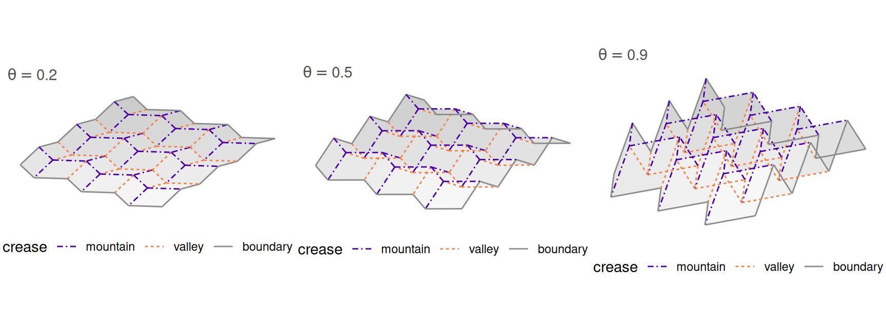
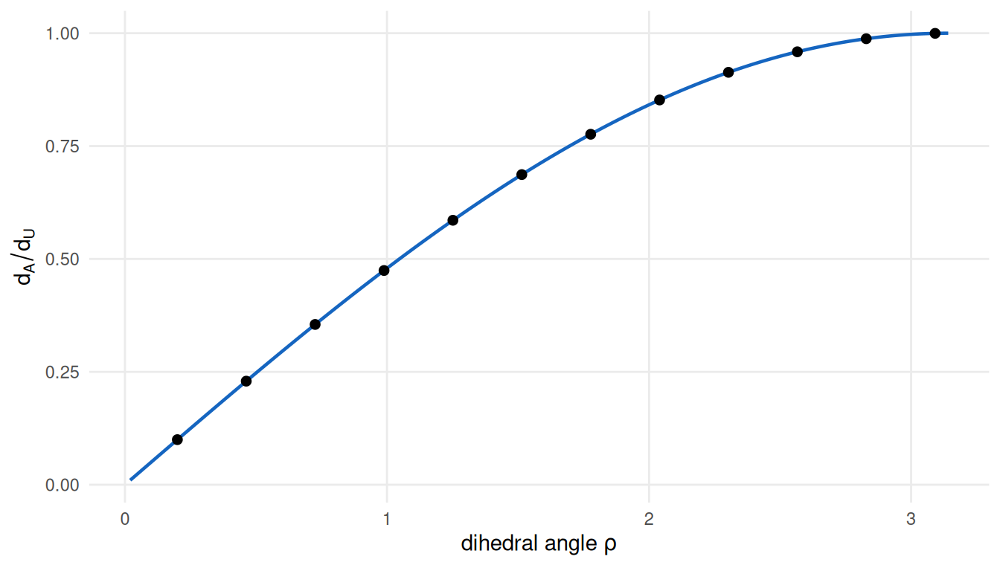
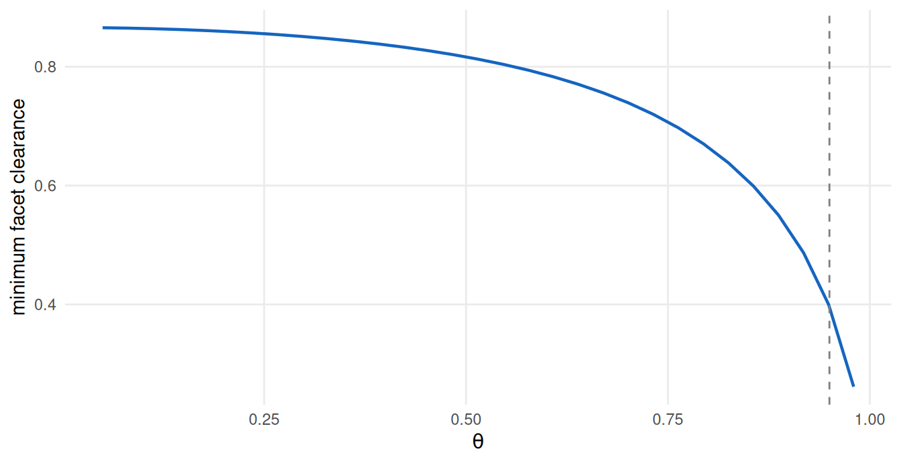

2 The geometry of folding
What does folding preserve, and what does it destroy?
2.1 What this chapter answers
A sheet of paper folded along creases is a surface in space. Flattened out again it is a region of the plane. The two are the same paper, and that is the whole of this book’s method: the flat region is not a good approximation to the folded surface’s true two-dimensional structure, it is that structure, written down in closed form before any data are generated.
This chapter establishes what that sameness does and does not mean. Folding preserves every distance measured along the surface and destroys a great many measured through the space around it, and almost every difficulty a dimension-reduction method has with a folded sheet is a consequence of that one sentence. A method sees the second kind of distance and is scored against the first.
Nothing here is asserted. Every claim in this chapter is a check in
tests/testthat/, and every number is computed while the page is built.
2.2 Setup
p <- miura_ori(nx = 6L, ny = 6L, alpha = pi / 3)
f <- fold(p, theta = 0.6)miura_ori() returns a flat crease pattern; fold() places it in space at a
folding parameter \(\theta\). Both are in R/, sourced when this book renders,
and the notation appendix fixes the symbols.
2.3 Background
2.3.1 What a crease pattern is, and what it is not
A crease pattern is a planar straight-line graph on a region of paper: vertices, straight creases between them, and the facets those creases enclose. It carries one more piece of information per crease, an assignment — mountain or valley — which says which way the paper turns there.
The literature on origami mathematics is largely about which patterns fold and how to design one that folds to a given shape (1,2). This book needs almost none of that. It needs one family that provably folds, and it needs the folding written as a map it can evaluate at any \(\theta\).
Not the Huzita–Hatori axioms. A reader who has met origami mathematics before will expect the construction axioms — the seven operations that say which points and lines a folder can produce with a sequence of folds. They are not what makes a crease pattern a manifold, and they play no part in this book. They describe what can be constructed; the question here is what a given pattern, however obtained, is once folded. Hull’s Origametry (3) covers both and is the place to start if the constructive side is what you came for.
2.3.2 Rigid folding
The foldings this book uses are rigid: the facets stay flat and unstretched, and all the motion happens at the creases. That is a strong restriction and it is the source of everything that follows. A folding that let facets bend would still produce a surface, but its flat pattern would no longer be its unfolding, and the answer key would be gone.
Two classical conditions constrain which flat patterns can fold flat at all. At every interior vertex, Maekawa’s theorem says the numbers of mountain and valley creases differ by exactly two, and Kawasaki’s theorem says the alternating sum of the sector angles around the vertex is zero (3). Both are necessary and neither is sufficient. Chapter 8 returns to how little they guarantee; this chapter uses them as checks rather than as foundations, which is the only honest way to use a necessary condition.
The attribution here is tangled and it is better to say so than to pick a side. Kawasaki’s condition appears independently in work by Justin and by Murata, and no citation resolves cleanly to a single first statement. Origametry is the honest reference until one does.
2.3.3 Two kinds of isometry
The word isometry does two jobs and the difference between them is this book’s crux.
An intrinsic isometry preserves distances measured along the surface — the length of the shortest path an ant could walk without leaving the paper. Rigid folding is an intrinsic isometry, exactly and by construction: the facets do not stretch, so a path drawn on the flat sheet has the same length after folding.
An ambient isometry preserves distances measured through the surrounding space — straight lines through the air. Folding is emphatically not an ambient isometry. Bring two points on either side of a crease together by folding, and the straight-line distance between them collapses while the path along the paper does not change at all.
Every method in Part II consumes ambient distance or something built from it. The answer key is intrinsic. That mismatch is not a flaw in the benchmark; it is the benchmark’s subject.
2.3.4 Curvature, and where it is not
The natural wrong intuition about a folded sheet is that its curvature has been pushed into the vertices. It is worth writing against rather than merely avoiding, because it is wrong in a way that would undermine the whole construction if it were right.
Discrete Gaussian curvature at a vertex of a polyhedral surface is its angle defect: \(2\pi\) minus the sum of the sector angles meeting there. For a folded flat sheet those angles are the flat pattern’s angles, unchanged by folding, and they sum to exactly \(2\pi\) because the vertex was an interior point of a flat piece of paper. The Gaussian curvature is identically zero, at every vertex and on every facet. Were it otherwise the sheet would not be developable and the flat pattern would not be its unfolding.
What does concentrate on the creases is extrinsic: the second fundamental form, which is a measure supported on the one-skeleton rather than a function. The surface is intrinsically flat and extrinsically as bent as one likes.
For manifold learning the consequence that matters is a different quantity entirely. The reach of a submanifold (4) is the largest distance within which every point of the ambient space has a unique nearest point on the surface. Sampling theory for manifold learning is generally stated in terms of it (5), and a crease has reach exactly zero: a point just outside the fold is equidistant from both facets. So the standard sampling guarantees do not apply here at all — not weakly, not approximately. This book’s manifolds sit outside the hypotheses of the theory usually invoked to justify the methods being tested on them, which is worth knowing before Part III reports that some of those methods struggle.
2.4 The isometry, in five steps
2.4.1 One: the folding is written down, not solved for
The Miura-ori is a tessellation of congruent parallelograms (6). Its flat vertex \((i, j)\) sits at
\[x = i\,a + (j \bmod 2)\, b \cos\alpha, \qquad y = j\, b \sin\alpha,\]
where \(a\) and \(b\) are the cell side lengths and \(\alpha\) its acute angle. The \((j \bmod 2)\) term is the entire pattern: it makes the transverse crease lines zigzag with period two instead of running straight, which is what turns a plain parallelogram lattice into something that folds.
The folded placement is obtained by positing a form and solving for the constants rather than by rotating facets about creases and hoping the result closes. Look for
\[x = i L_x + (j \bmod 2)\, d_x, \qquad y = j L_y, \qquad z = (i \bmod 2)\, H .\]
Two facet side vectors follow immediately, \(e_1 = (L_x, 0, \pm H)\) for the horizontal edge of flat length \(a\), and \(e_2 = (\pm d_x, L_y, 0)\) for the zigzag edge of flat length \(b\). Because both are shared by opposite sides, every facet is a parallelogram and therefore planar with no further conditions. Isometry then needs only the two edge lengths and the angle between them:
\[L_x^2 + H^2 = a^2, \qquad d_x^2 + L_y^2 = b^2, \qquad L_x d_x = ab\cos\alpha .\]
Three equations in four unknowns: a one-parameter family, which is the rigid folding. Writing \(L_x = a\cos\varphi\) and \(H = a\sin\varphi\) solves the first identically and leaves \(d_x = b\cos\alpha/\cos\varphi\) and \(L_y = b\sqrt{1 - \cos^2\alpha/\cos^2\varphi}\).
\(L_y\) is real only while \(\varphi \le \alpha\), and vanishes exactly at \(\varphi = \alpha\), which is the flat-folded state. So \(\varphi\) runs on \([0, \alpha]\) and the natural normalised parameter is \(\theta = \varphi/\alpha\).
\(\theta\) is a parameter, not an angle. It runs on \([0, 1]\): zero is the flat sheet and one is flat-folded. The dihedral angle \(\rho\) at a crease is derived from it and is never a synonym for it — a distinction this project got wrong once and now states in three places.
2.4.2 Two: the isometry is exact, not converged
Because the placement was derived by imposing edge lengths and facet angles, the isometry holds by construction rather than to a solver’s tolerance. That is a claim about algebra, and algebra is exactly the thing that might be wrong, so it is measured.
facet_isometry_error() compares all pairwise distances between a facet’s
vertices, folded against flat, not just its edges: an implementation that
preserved every edge of a parallelogram while shearing it would pass an edge
test and would not be a rigid folding. Over the whole \(\theta\) sweep the worst
departure on this pattern is 0, which is floating-point
noise on a closed form rather than a tolerance anyone chose.

Figure 2.1: The flat crease pattern and the same sheet folded. Mountain and valley creases are distinguished by colour and by line style together, so the distinction survives greyscale printing.
Panel A of Figure 2.1 is the answer key. Panel B is what a dimension-reduction method is shown. Everything in Part III is a measurement of the gap between them.

Figure 2.2: One pattern at three points of its one-parameter family. The sheet contracts in both directions as it folds; the flat chart behind it does not change at all.
Figure 2.2 is that family at three values of \(\theta\), drawn at one scale. Two things are visible and both matter later. The sheet contracts in both directions at once, which is why fold angle is a difficulty parameter rather than a nuisance: it moves the ambient geometry continuously while leaving the chart exactly where it was. And the contraction is not uniform — the far end of the range does most of it, which is why the \(\theta\) grid in Part III is even in \(\theta\) and uneven in everything a method cares about.
The derivation above is for one family. Nothing in this book requires a second, and two candidates for one were withdrawn on evidence rather than dropped quietly; Chapter 8 reports both as results. What a reader should take from that is the standard a folding has to meet here: a closed form, an exact isometry, and a fold that reaches every crease family. Two of the three are easy.
2.4.3 Three: what folding does to distance along the surface
Nothing. That is the point, and it needs no further argument once the facets are
congruent: a path on the sheet crosses the same facets in the same places at any
\(\theta\), so its length is the same. Geodesic distance between two sample points
is therefore exactly the distance between their positions in the flat chart,
subject to one caveat that is stated in geom-limits rather than hidden here.
2.4.4 Four: what folding does to distance through space
Here folding does a great deal, and the amount is exact.
Take two points on opposite sides of a single crease, each at perpendicular distance \(d\) from it and at the same position along it. Their chart distance is \(2d\) at any fold angle. Their ambient distance, once the crease has closed to a dihedral angle \(\rho\), is \(2d\sin(\rho/2)\). So
\[\frac{d_A}{d_U} = \sin(\rho/2),\]
which depends on \(\rho\) alone. Not on \(d\), not on where along the crease the pair sits. That independence is the substance of the claim; a ratio that drifted with distance would mean the relation was an approximation.
ratio_err <- max(vapply(seq(pi, 0.05, length.out = 40), function(rho) {
max(vapply(c(0.1, 1, 7.3), function(d) {
P <- c( d * sin(rho / 2), 0, d * cos(rho / 2))
Q <- c(-d * sin(rho / 2), 0, d * cos(rho / 2))
abs(sqrt(sum((P - Q)^2)) / (2 * d) - sin(rho / 2))
}, numeric(1)))
}, numeric(1)))Over forty dihedral angles and three separations the worst departure from \(\sin(\rho/2)\) is 0 — one unit in the last place, which is what “exact” means in double precision.
A flat sheet has \(\rho = \pi\) and contracts nothing. Every fold contracts, and since \(\sin(\rho/2) < 1\) for every \(\rho < \pi\), ambient distance is strictly less than chart distance for every \(\theta > 0\).
2.4.5 Five: the floor under “strictly”
That last sentence is false as written, and the chapter says so rather than leaving a reader to trip over it in Part III.
Because \(1 - \sin(\rho/2) \approx (\pi - \rho)^2/8\) near the flat state, the contraction is quadratic in the fold angle while machine epsilon is not. There is therefore a fold angle below which the contraction exists mathematically and is not representable.
gap <- function(g) 1 - sin((pi - g) / 2) # g = pi - rho
floor_pred <- sqrt(8 * .Machine$double.eps / 2)
theta_min <- min(THETA_GRID[THETA_GRID > 0])The predicted floor is 0 radians, and it behaves:
gap() returns 0 at a fold angle of \(10^{-3}\) and exactly
0 at \(10^{-8}\). The smallest non-zero \(\theta\) this book’s grid uses
is 0.05, which is above the floor by a wide margin — and that margin is
the only reason Part III may treat the contraction as strict.
2.5 Results
Three consequences follow, and they are the reason this chapter comes before the methods rather than after them.
The answer key is not what the methods reproduce. A method that consumes ambient distance is being asked to reproduce a configuration that folding has already contracted. Scoring it against the intrinsic chart is a legitimate question — it is the question of whether the method recovers the surface — but it is not the question the method’s loss function asks.
The exact answer scores badly on the wrong metric, provably. This deserves stating as a proposition rather than demonstrating with a simulation.
Proposition. Let stress be measured against ambient distance, and let the candidate embeddings be the exact chart \(\mathcal{U}\) and the two-component PCA of the folded cloud. Then for every \(\theta > 0\), \(\mathrm{stress}(\mathcal{U}) > \mathrm{stress}(\mathrm{PCA})\).
The proof is one line given step four. Ambient-referenced stress measures reproduction of \(d_A\); the contraction gives \(d_A < d_U\) strictly; and two-component PCA is by construction the least-squares-optimal linear approximant to that same ambient configuration (7,8). The exact unfolding is not competing to reproduce ambient distance and loses to something that is.
An evaluator that ranks the true answer below a plainly wrong one is not malfunctioning. It is answering the question it was asked. Chapter 9 measures how far that goes on real evaluators, and finds it goes further than this proposition requires.
Difficulty has a knob. Because \(\theta\) is continuous and the contraction is monotone in it, every result in this book is a curve rather than a number. That is standing rule 2, and it is not a stylistic preference. Chapter 8 reports a case where two method families swap places partway along the \(\theta\) axis, so that the average over \(\theta\) names a different winner from the curve at seven of its nine points. A benchmark with one fixed geometry cannot produce that observation, because it has nowhere to put it.
This is the specific sense in which a crease pattern is a better instrument than a Swiss roll, and it is worth separating from the claim it is often confused with. It is not that folded sheets resemble real data more closely. It is that the truth is known and the difficulty is continuously adjustable, so a method’s performance is a function rather than a point, and the shape of that function is a property of the method. The critique that two-dimensional embeddings distort more than their users admit (9,10) is an argument this book answers with measurement, and measurement of that kind needs an axis to measure along.

Figure 2.3: The ambient-to-geodesic distance ratio across a single crease, against the dihedral angle. The curve is \(\sin(\rho/2)\); the points are measured from folded coordinates. A flat sheet sits at the right-hand end and contracts nothing.
2.6 Diagnostics
The most useful material in this chapter is about two things this project got wrong. Both were caught, both are cheap to state, and both generalise past origami.
2.6.1 An isometry test cannot tell a fold from a pleat
A second pattern family, the Yoshimura, shipped for three days with a folding that was not one. It folded its horizontal creases and left every diagonal at \(\rho = \pi\) — an accordion pleat wearing a diamond tessellation’s crease pattern.
It passed the facet-isometry test perfectly, because a pleat is a rigid folding. It passed Kawasaki, because the flat pattern was never the problem. Neither test could have caught it: both are properties a correct implementation has, and a pleat has them too.
What caught it was deriving the mountain/valley assignment from the folded dihedral angles and testing Maekawa on the result. A pleat leaves whole crease families flat, and a vertex with unfolded creases cannot balance:
a <- crease_assignment(p)
iv <- interior_vertices(p)
maekawa <- vapply(iv, function(v) {
sel <- (p$creases$i == v | p$creases$j == v) & a != "B"
abs(sum(a[sel] == "M") - sum(a[sel] == "V"))
}, numeric(1))On this Miura all 25 interior vertices satisfy \(\lvert M - V \rvert = 2\). On the pleat, twelve of sixteen failed.
2.6.2 A test that a correct implementation passes is not a test a wrong one fails
That is the moral, and the same chapter has to record that this book learned it twice.
The derived assignment above was itself wrong for four days, in a way Maekawa could not see. Maekawa counts labels at a vertex; it is therefore invariant under swapping every mountain for every valley, so it passes on a labelling, on that labelling’s exact inverse, and on a third that agrees with neither on half the creases. All three were live in this repository at once, and the one the figures drew was correct on half the interior creases.
inverted <- ifelse(a == "M", "V", ifelse(a == "V", "M", "B"))
maekawa_inv <- vapply(iv, function(v) {
sel <- (p$creases$i == v | p$creases$j == v) & inverted != "B"
abs(sum(inverted[sel] == "M") - sum(inverted[sel] == "V"))
}, numeric(1))The inverted labelling — every mountain a valley — satisfies Maekawa at 25 of 25 interior vertices, which is all of them. The check that finally settled it computes the assignment a second time by an independent route, from facet normals oriented against the ambient frame rather than against the mesh’s own winding, and compares.
2.6.3 A first-order flex at the flat state proves nothing
The third instance, recorded here because it is the same error in a different costume. At \(\theta = 0\) every \(z\) column of a pattern’s rigidity Jacobian vanishes, so the count of non-trivial infinitesimal flexes is \(V - 3\) for any planar pattern whatsoever — including patterns with no rigid folding at all. A first-order flex at the flat state is a property of being flat, not of being foldable. Second-order analysis and a finite continuation are what decide, and Chapter 8 records what they decided.
2.7 Where it fails
2.7.1 The chart is the geodesic only inside a convex region
Step three claimed that geodesic distance equals chart distance. That is true when the straight segment between two chart points stays on the paper, and a Miura’s unfolded outline is not convex — its edge is a zigzag with teeth. For a pair straddling a tooth the straight chart segment leaves the sheet, the true geodesic must detour, and the chart distance is a lower bound rather than an equality.
m_in <- sample_manifold(p, theta = 0.6, n = 400L, seed = 1001L)
m_out <- sample_manifold(p, theta = 0.6, n = 400L, seed = 1001L, boundary = TRUE)
exit_in <- chart_exit_fraction(m_in, p)
exit_out <- chart_exit_fraction(m_out, p)chart_exit_fraction() measures how often it happens by sampling pairs and
walking the segment between them. Drawing strictly inside a convex sub-rectangle
gives an exit fraction of 0; including the boundary strip
gives 0.013. Every artefact in this book that the answer key is
read against is drawn the first way, and the producer that generates the
irreducible-loss suite asserts the zero rather than trusting this paragraph.
2.7.2 Self-intersection
Nothing in the algebra of step one prevents a folded placement from passing through itself, and a self-intersecting surface would invalidate every ambient distance measured on it.
facet_gap() computes the exact minimum distance between non-adjacent facets —
polygon to polygon, analytically, not by sampling points on them. At \(\theta\) of
0.3, 0.6 and 0.9 it is 0.851,
0.786 and 0.526: falling as the sheet
closes, as it must, and positive throughout.

Figure 2.4: Minimum clearance between non-adjacent facets, against the folding parameter. The surface approaches itself as it folds and never touches; the dashed line marks the largest fold angle the benchmark grid uses.
Figure 2.4 is the whole range. The clearance falls smoothly and stays positive, and the largest \(\theta\) the benchmark grid uses is marked: at 0.95 the sheet still has 0.396 of clearance. That is the check behind an assumption every ambient distance in this book depends on, and it is a check rather than an argument because the algebra of step one does not forbid self-intersection — it simply does not produce one for this family in this range.
2.7.3 Sampling, and what a finite sample of a zero-reach surface is
The reach remark in geom-background has a practical edge that belongs here.
Every guarantee about recovering a manifold from a finite sample is stated in
terms of the density of the sample relative to the reach (5),
and a crease has reach zero, so no such guarantee is available at any sample
size. What replaces it in this book is not a weaker theorem but a measurement:
the sampled surface is checked for how close distant parts of it come, in units
of the local spacing, and that ratio is reported alongside every result that
depends on it. Isomap’s failure mode on tightly folded surfaces is precisely a
short circuit between sheets that the sampling cannot distinguish
(11,12), and the quantity that
predicts it is a property of the sample rather than of the surface.
2.7.4 One family
This book ships one pattern family that folds. Two others were specified and both were withdrawn on evidence, which Chapter 8 reports as results rather than as gaps. A benchmark built on a single family cannot support claims about pattern variety, and this book does not make any.
2.7.5 What the chapter does not settle
Whether a folded sheet is a good model of the manifolds that arise in real data is not a geometric question and is not answered here. Chapter 11 measures what this benchmark discriminates that the classical ones do not, and Chapter 12 takes the result to a real dataset. The honest position in between is that a crease pattern is a manifold whose truth is known exactly, which is a property no real dataset has and no previously used benchmark provides.
2.8 Reproduce this
Every claim above is an assertion in the test suite, and the suite runs on every push:
-
tests/testthat/test-folding.R— facet isometry across the \(\theta\) sweep and the \(\alpha\) range, no self-intersection, the dihedral contract. -
tests/testthat/test-patterns.R— congruence, Kawasaki, Maekawa, vertex degree. -
tests/testthat/test-crease-assignment.R— the mountain/valley derivation against an independent criterion, and the demonstration that Maekawa cannot discriminate. -
tests/testthat/test-contraction.R— \(\sin(\rho/2)\) and the floating-point floor.
Run them with Rscript tests/testthat.R from the repository root.
2.9 Further reading
Hull’s Origametry (3) is the single best entry point to the mathematics of flat-foldability and is the reference for both classical theorems above. Demaine and O’Rourke (2) is the standard treatment of the computational side, and Lang (1) of design. Miura’s original report (6) introduces the pattern this book uses; Schenk and Guest (13) give the mechanics of folded shell structures and are the natural next step for a reader interested in the surfaces rather than the sheets.
On the manifold-learning side, Federer’s reach (4) and its role in sampling guarantees (5) are what the zero-reach remark above refers to, and Lee and Verleysen (14) is the textbook treatment of the methods Part II takes up.